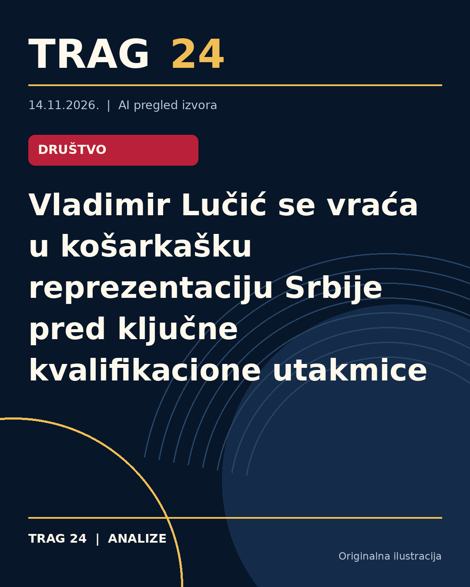

Vladimir Lučić se vraća u košarkašku reprezentaciju Srbije pred ključne kvalifikacione utakmice

ŠTA SE DOGODILO
Vladimir Lučić, iskusni košarkaš minhenskog Bajerna i nekadašnji kapiten nacionalnog tima Srbije, prihvatio je poziv selektora Dušana Alimpijevića i vraća se u reprezentaciju Srbije za novembarski kvalifikacioni ciklus za Svetsko prvenstvo 2027. godine. On će biti na raspolaganju selektoru za utakmicu protiv Italije u Beogradu, dok zbog obaveza u Evroligi najverovatnije neće nastupiti u susretu protiv Litvanije u Klaipedi.
HRONOLOGIJA
Lučić je poslednji put nastupao za reprezentaciju Srbije 14. novembra 2022. godine u kvalifikacijama za Svetsko prvenstvo 2023, kada je svojim odbrambenim igrama doprineo pobedi nad Turskom (77:76). Prethodno je nastupao na Evropskom prvenstvu 2022. godine, gde je igrao protiv Italije u osmini finala. Posle dugog perioda odsustva iz nacionalnog tima, došlo je do promene plana selektora Alimpijevića koji je odlučio da ga pozove za predstojeće utakmice, s obzirom da su u pitanju važni mečevi u kvalifikacionom ciklusu.
ŠTA NAVODE IZVORI
Prema informacijama iz medija Telegraf, Nova.rs i Novosti, povratak Vladimira Lučića u reprezentaciju predstavlja veliko pojačanje za tim. Svi izvori se slažu da će Lučić biti dostupan za meč u Beogradu protiv Italije, dok je njegovo učešće u susretu u Litvaniji pod znakom pitanja zbog termina i obaveza u Evroligi. Takođe, navodi se da je značajnu ulogu u njegovom povratku imao selektor Alimpijević i stručni štab nacionalnog tima.
ŠTA JE POTVRĐENO
Potvrđeno je da će Vladimir Lučić biti deo reprezentacije Srbije u novembarskom ciklusu kvalifikacija za Svetsko prvenstvo i da će biti dostupan za utakmicu protiv Italije u Beogradu. Njegova poslednja zvanična utakmica za Srbiju bila je u novembru 2022. godine, a svoje prisustvo u timu je odbio ranije, ali je sada pristao da se vrati. Takođe je potvrđeno da zbog obaveza u Evroligi neće moći da igra oba susreta u novembarskom ciklusu.
ŠTA NIJE POTVRĐENO
Nije potvrđeno da li će Lučić moći da nastupi i u utakmici protiv Litvanije u Klaipedi. Takođe, nisu dostupni detalji o zvaničnom spisku reprezentacije niti precizni uslovi njegovog angažmana u narednim terminima posle novembarskih utakmica. Nije potvrđeno ni eventualno trajanje njegove nove reprezentativne karijere niti da li će se posle ovog povratka stalno nalaziti u sastavu nacionalnog tima.
ŠTA OSTАJE OTVORENO: Ostaje nejasno da li će Vladimir Lučić ostati dugoročno u reprezentaciji Srbije ili će njegov povratak biti ograničen samo na ovogodišnji kvalifikacioni prozor. Takođe, budući planovi reprezentacije i selektora u pogledu angažovanja drugih igrača, kao i kompletna strategija za Svetsko prvenstvo, još nisu poznati. Ostaje nepoznanica kako će se Lučić uskladiti sa obavezama u klubu i reprezentaciji u narednim mesecima.
Izvori
- https://www.telegraf.rs/sport/kosarka/4432914-vladimir-lucic-se-vraca
- https://nova.rs/sport/kosarka/vladimir-lucic-srbija-reprezentacija/
- https://www.novosti.rs/sport/kosarka/1671050/veliko-pojacanje-vraca-vladimir-lucic
Ova analiza je pripremljena uz pomoć veštačke inteligencije na osnovu javno dostupnih izvora. Navodi izvora nisu nužno nezavisno potvrđeni.